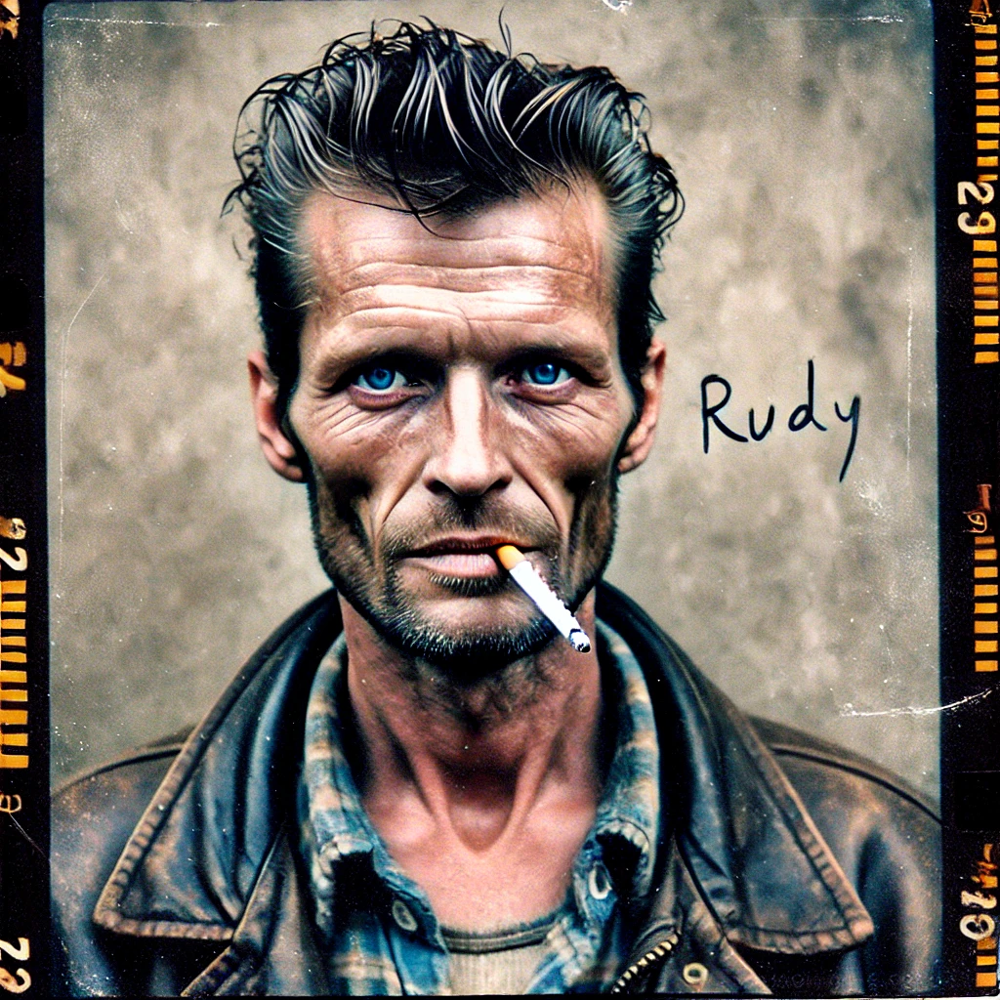

Rudy Williams

Alias/Nickname: None known
Physical: 5'7" — settled, final (2026-07-16, decided live): genuinely short, not just "shorter than Hale." An early "5'9"" figure floated during initial portrait description in "Ghosts of King County" never stuck once actual play started, where "Rudy is only 5'7"" got stated explicitly (contrasted with Deputy Humboldt's 6'1") and was echoed again in the separate "Escalating Tensions Rewrite" chat (notably shorter than Nathan Hale, a former state champion wrestler). Dave's own reasoning for keeping him this short: real-world Marine Scout Snipers are reportedly preferred shorter, since a smaller frame is easier to conceal — a detail that reinforces rather than undercuts his sniper background (see below). Wiry, skinny-but-muscled build. Rockabilly style: snap-button cowboy shirts, heavy black work boots, leather jacket, chin-length brown hair slicked back greaser-style, blue eyes, a wallet chain (per The Prodigal Son). Chain smoker despite knowing better — specifically Camel Wides, per the same source. Visual references cited: a mix of James Intveld, Johnny Depp, and Skeet Ulrich, with tired eyes like Steve Buscemi.
Role in Setting: Veteran Monster Hunter, Protector of Phoebe, Survivor of supernatural events
Based in: Shepherd's Inn in Shepherd Junction, Colorado
Background (Pre-King County)¶
-
Origins: Rudy was part of a group of kids who survived a supernatural encounter in California, inspired by the true events behind The Monster Squad (Movie). He was one of the only people who understood the real stakes of the situation, not the fictionalized version. As a teenager, he helped prevent a powerful vampire (not Dracula, as in the movie) from opening a portal to a realm—potentially Limbo, the Abyss, or the Underworld. Confirmed dates: The California Incident happened in 1986, when Rudy was 15 and Phoebe was 5.
-
Childhood before the incident (per "California Incident Brainstorming"): Both parents dead by the time he moved to town to live with his paternal grandparents — Rudy believes he killed his father, or at least that this was rumored about him, though the truth of it is never pinned down. He arrived with a reputation as "the dangerous kid" he hadn't actually earned, nicknamed "Rude Rudy" by his grandparents. Poor: his banana-seat bike, camera equipment, jacket, and general 60s-throwback style were all his late parents' — likely hand-me-downs from a father who dabbled in photography as a hobby. Met Horace first over the summer, as neighbors, before either of them started school or heard the "Fat Kid" nickname. Joining the Monster Club (led by Sean, not Rudy) was as much about finally having friends as it was about the mystery itself.
-
"An Innocent," and a deliberate choice never to have kids, confirmed (2026-07-22, per "King County Chronicles ChatGPT consolidatation"): Dave's own term for Rudy — someone exposed to the supernatural young, before he had any say in it. Made a deliberate, legal decision early on never to have biological children, knowing firsthand how messed up this world actually is. Jamie is, in Dave's own words, "the closest thing Rudy will ever get to having a child of his own."
-
His parents were both Hunters, floated by Dave himself (per "King County Chronicles ChatGPT consolidatation"): A fact meant to surface as a reveal neither Rudy nor Phoebe consciously knows going in, inside the drafted Book 6-ish "God's House" haunted-house/bottle episode (see God's House). Compatible with, and possibly the real explanation behind, the already-established "Rudy believes he killed his father" rumor above — not yet reconciled outright, but the pieces fit.
-
Narrative frame (brainstormed, unconfirmed as final): Conceived as the first in a planned series of in-universe "Lore posts" — the story is told by an adult Rudy, late at night at Shepherd's Inn well after closing, to an unidentified listener in the shadows across the booth. See The California Incident for the framing device and the still-unresolved setting-name conflict (California town vs. two later real-world retcons, San Bruno then Baton Rouge).
-
Confirmed age/birthdate (per "Rudy Jenn Age Gap," full data export): 43 years old at the start of What Wasn't and What Was (September 2014), pinning his birthdate to roughly October/November 1970 — consistent with being 15 during The California Incident (~May 1986) and 16 about six months later.
-
First real pregnancy scare (confirmed): Roughly six months after The California Incident, early 1987, at age 16 — not with Jenn's mother (Jenn was simply conceived around the same window, an unrelated coincidence he notes to her later: "You were born in September. I was sixteen nine months before that."). Established more broadly: Rudy used protection most of the time but has had "a scare or three," both pregnancy and STD scares, consistent with a one-night-stand/occasional-client-of-sex-workers history. As far as confirmed, he has no children of his own — though the door isn't explicitly closed on that changing later in the series.
-
Confirmed Book 1 beat — briefly suspects a child is his own: Rudy briefly thinks one of the kids in What Wasn't and What Was might be his biological child; it's confirmed not to be his almost as fast as the thought occurs. Not stated outright which child prompts this, but given the book's plot, Caleb is the most likely candidate — worth confirming rather than assuming. See Development Notes & Unresolved Questions.
-
Confirmed motive for hunting vampires specifically (per "Vampire Population Ratio," full data export): Rudy tolerates or ignores most other supernatural weirdness in King County — vampires are the one category he always hunts, rooted directly in The California Incident, not general monster-hunting zeal. He believes King County has no resident vampires at all; see Supernatural Influence and Dynamics for the confirmed dramatic-irony mechanic behind that belief and its eventual payoff via Mickey Two-Dice.
-
"A human he killed," resolved (2026-07-16, decided live, grill-canon session) — and confirmed as the same event as the Hollow Creek rumor below: A young-generation vampire — a nomad, or a new resident of King County — not yet an active threat when Rudy killed it, consistent with his habit of hunting vampires proactively rather than waiting for them to act. Young vampires don't rapidly decay or age to their true years on final death the way old ones do, so the body came out looking fresh and ordinary — human, not monstrous. Rudy knows it wasn't murder, but he never corrects the record; letting people believe he killed a human protects the innocent rather than exposing the supernatural. This is exactly why "Hollow Creek" reads the way it does to everyone but Rudy himself — no body, no charges, a man who stopped showing up, blood on Rudy's boots. Not connected to the separate Mickey/Passion hostage scene (see Mickey Two-Dice) — both are real, but distinct, dark moments in his history.
Rudy is a killer, and knows it, confirmed (2026-07-18, decided live, grill-canon session): Surfaced while resolving who kills The Huntsman — Dave's own framing draws a direct, deliberate contrast with Jamie, who has never willingly killed anything. Rudy doesn't want the violence he's committed (and is capable of) to define him — but late at night, alone with his own thoughts, he's not entirely sure it isn't already his definition of himself. This isn't a new event to add to his history; it's the internal cost of the history already on the record above (the Hollow Creek kill, his military service, whatever else hasn't made the page yet) — a running, unresolved self-doubt rather than a settled verdict either way.
-
Confirmed mid-1990s job, post-discharge (per "No-Tell Motel narration," full data export): Worked the graveyard shift as night clerk at The Four Kings, a run-down 1950s motel just off I-70 at Stanton City's first exit, mainly for access to a shower and kitchen — he was living out of a cab-over truck-bed camper at the time, freshly discharged (dishonorably, though he didn't mention that when he got the job), and the owner was glad to have someone with combat/observation training who actively wanted nights. See Stanton City, Colorado.
-
Confirmed dates (military and arrival): Enlisted in the Marines just before the Gulf War (Operation Desert Storm) and deployed to Kuwait, ~1990–91. Left the Marines around 1999 at roughly age 28, with zero interest in reenlisting after 9/11. The solo game's "present day" is set roughly 15 years later, around 2014, making Rudy about 43.
-
Left-hand scar, unconfirmed (2026-07-22, flagged on second pass): A prewriting draft has him grazed by a bullet between the first and second knuckle of his left hand during the Three Generations Ritual present-day climax — but that draft's staging of the fight is the "cliché cop out" version Dave already rejected elsewhere (see The Three Generations Ritual), so this specific scar detail is unconfirmed, not dropped. Weapon of choice in the original (Dawes) case was a compound bow with broadhead arrows (see Boot Knife), favoring quiet over a firearm — that part isn't in tension with anything and stands.
-
Supernatural Battle: During the California events, a local werewolf pack tried to take down the vampire but failed, with one member ending up blood-bound to the vampire. Rudy and his friends enlisted the help of a mage (known as "Scary German Guy") to close the portal. Resolved (2026-07-16, decided live, grill-canon session): Phoebe sealed the portal herself via a spontaneous Awakening at a young age — Scary German Guy was genuinely present and involved, but not the source of the power; the earlier "acted as his battery" framing is retired.
-
Aftermath: The experience left deep marks on all the survivors. Rudy served time in juvenile detention and then joined the United States Marine Corps, while the others went separate ways. Phoebe suffered severe mental trauma and has spent her life primarily in mental health facilities.
-
A civilian framing of the juvenile-detention-to-Marines pipeline (draft dialogue, consistent with established canon): In his own words to Jenn, before any of the supernatural stuff: "It wasn't monsters the first time. Wasn't justice. Just me. Angry. Broke. Broke a lot of things. They gave me a choice — prison, or the war." He chose the war "because it was honest, at least." Frames his current hunter activity as breaking the same kind of laws now, "just tr[ying] to do some good with it."
-
Fallujah anecdote (separate from the Kuwait supernatural-ops unit): Claims to have been "a private champ in a bar outside Fallujah" — took down a man twice his size without spilling his beer. Implies a second, non-supernatural military deployment/story distinct from the Desert Storm-era Kuwait unit where Doc Mabey turned.
-
A third deployment detail (per The Prodigal Son): a 16-month deployment in Saudi Arabia, described as "a good soldier" but worn down by "four years without the ability to make real, life-changing decisions." Possibly compatible with the Kuwait and Fallujah deployments as part of one longer enlistment rather than a contradiction — not confirmed either way.
-
History with Doc Mabey: Rudy was part of an elite special forces unit in Kuwait where they were tasked with dealing with supernatural threats during Desert Storm. During one mission, Aaron Mabey experienced his First Change and slaughtered everyone in the unit except Rudy. Rudy went AWOL hunting Mabey, unsuccessfully, for about six months before he was discharged and sent home.
-
Confirmed pre-military backstory (per "Civilian Rifle Equivalents," full data export — Dave's own "things I know for sure" list): After The California Incident, teenage Rudy kept hunting monsters while trying to pass as a normal kid — struggled with high school (knowing what he knew) but excelled at wrestling and archery, and never graduated. As an untrained, self-taught hunter he broke plenty of mundane laws too — mostly trespassing and underage drinking. Near 18, he was caught carrying a weapon and given the classic ultimatum: adult jail or military enlistment. In-universe, the military quietly tracks people known to have been exposed to the supernatural specifically to conscript them into specialty units without further exposure risk — Rudy was one of these. He served long enough to become a Scout Sniper before the AWOL/discharge below. His actual paper MOS was 0311 Rifleman — "Scout Sniper" wasn't a standalone MOS in that era — and he deliberately tells hunter-network small talk he was "0311. Infantry" or "did some recon work," never the more specific truth, to avoid follow-up questions that would surface his discharge story.
-
Unconfirmed unit roster (flagged, not canon): A full six-man squad roster (Staff Sgt. Victor Alvarez, Cpl. Kevin "Hawk" Donnelly, Hospitalman Aaron "Doc" Mabey, Cpl. Jamal Brooks, L/Cpl. Mateo Torres, PFC Danny McConnell) was assistant-generated during this backstory session. Dave only ever reused "Doc" and "Hawk" afterward — treat the rest as provisional placeholder names, not confirmed canon, until/unless Dave reuses them himself.
-
Confirmed Kuwait massacre and AWOL details: Doc's First Change happened in Kuwait during Desert Shield, triggered by a full moon, and killed the rest of the unit in seconds while Rudy was on overwatch. Rudy found "impossible wounds" and oversized alternating wolf/human tracks leading into the desert — noticed only because of his Trained Observer and Danger Sense merits. He chose not to report what he'd actually seen (it would've sounded insane and ended any chance of hunting Doc himself) and went AWOL, tracking Doc from Kuwait through Turkey and into the Balkans/Eastern Europe. He was, and remained, the far better tracker — Doc's only real advantage was speed and endurance, not evasion craft, and Doc never once realized Rudy was on his trail at all (he assumed he'd died with the rest of the unit).
-
Confirmed reason the hunt actually ended: Rudy eventually had Doc in his literal rifle sights — and couldn't take the shot. Worse, he realized in that moment he probably never could. So he turned himself in and accepted the consequences rather than keep chasing a kill he already knew he wouldn't make. This — not simply running out of time — is why the AWOL pursuit ended. He was very likely court-martialed and did a stint in military prison before the dishonorable discharge (no GI Bill/VA benefits afterward, though pay already earned couldn't be clawed back). The discharge also bars him from VFW/American Legion membership; he avoids wearing anything Marine-branded and keeps his dog tags, service record book, and one old unit photo put away rather than displayed.
-
Confirmed personal hatred of vampires specifically, tied directly to the California Incident: The werewolf Rudy killed as a teenager during that incident was blood-bound/Dominated by the vampire (see The Vampire) — starving, near-feral, not acting of its own will. This is the confirmed root of Rudy hunting vampires specifically above other supernatural threats, even though he knows werewolves and other things exist and mostly leaves them alone.
-
Rudy in hunter-network circles: Compared directly (Dave's own comp) to Bobby Singer from Supernatural — a known hub/dispatch point other hunters route through, despite his own discharge stigma.
-
Confirmed escalation (per "Astrology Birthday Guess," full data export): Rudy's unit was likely embedded with (or a precursor to) Task Force VALKYRIE, the military-black-ops Hunter conspiracy — treated as his "old life" before he later fell in with [[The Union]]-style, community-first hunting instead. His command wrote Doc off as a low-priority "rogue asset" not worth reassigning him to chase, ready to slot Rudy into a new unit instead — confirmed motivation for going AWOL: not just vengeance, but the conviction that if anyone had to put Doc down, it should be someone who still remembered him as a person, not a stranger with a kill order. Rudy didn't just go AWOL — he took government firearms with him, which is what actually led to the dishonorable discharge (and possibly a stint in military prison) rather than a simple administrative separation. Doc is confirmed still out there as of "Book 3" in this brainstorm's now-superseded numbering — see Book Order and Series Structure for why that numbering conflicts with Dave's later, direct confirmation that Book 3 is the Clara McKenzie campaign.
Naming cross-reference (2026-07-16, fresh-eyes pass on "Werewolves and Spirit Worlds," full data export): That chat separately calls this same unit "Project Valkyrie" and floats it as a memory-conditioning/containment program tied to a rejected Fetch/Rudy's-immaculate-memory plotline (see Aaron Mabey) — likely the same underlying idea as this confirmed Task Force VALKYRIE, but only the version here (tied to [[The Union]]-style hunting) is actually adopted.
Arrival in King County and Establishment (1999–Early 2000s)¶
-
Transition After the Military: Rudy arrived in King County in 1999 after being discharged from an elite military unit specializing in supernatural threats. With no initial knowledge of the county’s supernatural undercurrent, he began his new life living out of his truck-bed cab-over camper—a rugged 1972 Ford F250 with an extended bed, which he still drives. He worked odd jobs, quickly building a reputation as a reliable handyman around King County and surrounding areas.
-
First Encounter with Local Supernatural Threats: When local cattle began mysteriously disappearing, Rudy’s past experiences with supernatural entities drove him to investigate. He initially suspected a werewolf but discovered it was a Skinwalker. Though not well-versed in the nuances of local shapeshifters and Lycanthropy, he successfully handled the threat, marking his unofficial initiation as a “fixer” for the county’s hidden supernatural issues.
-
Shepherd's Inn, how he actually got it — resolved (2026-07-16, decided live, grill-canon session): Not locals pooling charity money, and not simply "bought it outright" in a vacuum — the two threads reconcile into one account. Despite the dishonorable discharge, Rudy was still legally entitled to the pay he'd already earned up through his desertion (just not GI Bill/VA benefits going forward). That alone wasn't enough, so he spent time saving through odd jobs — including his stint as the graveyard-shift clerk at Stanton City's Four Kings motel. The Skinwalker case is what actually made the purchase possible: the Inn's previous owner had been the Skinwalker's victim, and the grieving family, wanting to be rid of the place fast, accepted an insanely low payment for the deed — well within what Rudy had saved. He used it as his home base and a public front, while locals with unusual problems — some supernatural, some not — began coming to him for solutions. Over time, even the county police quietly recognized his expertise, occasionally recommending him when cases involved something "too weird" for standard protocol.
-
Consistent with The Prodigal Son, Book 2: This manuscript has Rudy driving west after a 16-month deployment in Saudi Arabia, specifically because he'd heard his last surviving Monster Squad friend, "Ash" (almost certainly Phoebe, whose established alias is Ashley), had been relocated to a facility in the Rockies. He lives out of his truck camper for about a month, taking odd jobs (hunting and mundane work both), before finding the abandoned Shepherd's Inn near a railroad siding and buying it outright — "the bank... was practically giving it away," which now reads as a direct reference to the desperate-family/Skinwalker-victim discount above, not a plot hole. The manuscript just doesn't spell out the Skinwalker case explicitly on the page.
- Shepherd's Inn's legal immunity (per The Prodigal Son): The Inn is entirely exempt from county code enforcement — never inspected, never will be — as a personal favor from a county official grateful to Rudy for saving his son's life. Almost certainly Executive Dawes, whose kidnapped-son case (see below) is the likely source of that debt, though it's not stated explicitly on the page.
- A separate, earlier standalone case (~20 years before "now"; see The Three Generations Ritual): A father came to Rudy about his kidnapped teenage son and the son's pregnant girlfriend, taken by a blood-mage pursuing a ritual requiring three firstborns across three generations of one bloodline. Rudy was brought in after a failed cop-involved ransom attempt escalated (mirroring the Dawes/Speno "no cops"/severed-finger pattern almost exactly). He killed the mage and saved the father and son, but not the girlfriend or unborn child. This is likely connected to Mickey's current pursuit of the same ritual, and to a still-unnamed survivor who holds a vendetta against Mickey.
- The Dawes case (Book 2 flashback — Rudy's first King County case): Not long after buying the Inn, county official Executive Dawes came to him — his son and the son's fiancée had been kidnapped, ransomed at a clearing called Boot Knife. Rudy's identity/reputation as a hunter isn't explained on the page; Dawes simply says he "hear[d] you... hunt things." The ransom drop failed (police involvement, against Dawes's instructions, may have spooked whoever was meant to collect it), and a second envelope arrived demanding a solo retry — accompanied by a severed adult finger. The outcome isn't shown; it's recalled only as backstory once an identical MO resurfaces with Jeff Speno's son in the present day, strongly implying the case was never truly closed.
Growth of a Network and New Role (Mid 2000s–Present)¶
- Building a Hunter Network: As Rudy’s reputation spread, he began cultivating a network of like-minded problem solvers, drawing on contacts from Colorado’s Western Slope and parts of Utah. Recognizing that supernatural cases are sparse in any single county, he established a loose network of hunters and investigators who could respond to issues as needed, covering a broad region from King County to Green River, Utah.
- Home Base at Shepherd’s Inn: Rudy now lives in a Winnebago parked behind Shepherd's Inn, with access to the Inn’s kitchen, bathroom, and shower. His old camper still stands beside the RV, but he no longer uses it for living. He maintains a low profile, generally leaving only for critical issues within Shepherd Junction, while primarily acting as “dispatch” for the hunters in his network. Deliberately not a permanent trailer home — it's something he can hitch up and leave with if necessary.¶
- Role as Dispatch and “Superior”: Rudy coordinates jobs, hears rumors, and provides guidance to hunter cells, passing on tips when something unusual pops up. He serves as a mentor and “superior” for clients who request one, establishing himself as the go-to resource for anyone in need of help with paranormal issues. In many ways, he has become a legend in the local supernatural circles, a central hub for dealing with King County’s otherworldly dangers.
Current Role in King County¶
-
Relocation to King County: Rudy moved to King County, Colorado, Colorado, after his discharge from the United States Marine Corps. He came specifically to be near Phoebe, who is catatonic and confined to an asylum in King County. His sole mission is to protect her from the unknown forces he believes are still after them.
-
Personal Mission: Rudy has long suspected that the deaths and disappearances of the other The Monster Squad (group) members are directly related to the supernatural events they experienced. This suspicion keeps him vigilant and isolated, always anticipating that whatever targeted them before might come for him or Phoebe next.
-
The obsessed-hunter type, confirmed (2026-07-22, decided live): He became this well before the Marines — as a teenager, in the years right after the portal incident, not as a result of his military service. That obsession is what actually drove Horace and Sean away, gradually, over a spread-out stretch of time — not some external force hunting them down, whatever Rudy himself has come to believe. Horace wanted to be safe and pulled away entirely; Sean stayed invested longer but the two of them couldn't keep working together over personality conflict. Rudy's belief in a systematic threat may be, at least in part, a story he tells himself rather than the literal truth — see The Monster Squad (group).
-
Relationship with Local Law Enforcement: King County law enforcement discreetly acknowledges Rudy’s expertise, occasionally recommending him off the books for cases that seem beyond standard protocol.
Current Reputation and Roleplaying Hints¶
- Local Legend: Among locals and those “in the know,” Rudy is the guy to contact for supernatural issues. Known for his reliability, discretion, and no-nonsense approach, he’s trusted by hunters, police, and wary townsfolk alike. He’s respected but feared, especially as he rarely reveals specifics, keeping details about supernatural threats close to his chest.
- Combat Style and Approach: While Rudy doesn’t often go out in the field anymore, when he does, he’s known for his aggressive style—jumping into fights without weighing the odds. He’ll throw himself into a brawl if necessary, especially if something disrupts Shepherd Junction. For most cases, though, he prefers to act as the mentor, guide, and dispatcher, making sure others can do the work without his direct involvement.
Key Relationships¶
- Jenn: His grounding force in What Wasn't and What Was. Where Rudy reads every hardship as a supernatural sign or consequence, Jenn refuses to mythologize pain — she's lived through real hardship with no curse behind any of it, and her non-magical read on events is played as correct, not naive. Confirmed: Jenn does not know about the supernatural, and Rudy intends to keep it that way — she sees his humanity, not his war; she cares for him because he's kind when he doesn't have to be, not because she knows what he's faced.
- Caretaking behaviors (established via draft dialogue): Brings her peanut brittle and licorice when she's had a bad shift; once pulled her car out of a ditch at 2am and never told a soul; calls her "kid" — established as armor, not an insult.
- Jealousy/protectiveness tell: Reacts badly to Nathan Hale saying her name "like he owned it" — pushes back even though Hale doesn't mean it that way.
- The Hollow Creek rumor, resolved (2026-07-16, decided live, grill-canon session): Hale tells Jenn a specific rumor about Rudy: that he shot and killed a man near "Hollow Creek" in the middle of the night — no body, no charges, just someone who stopped showing up and Rudy with blood on his boots and no explanation. This is confirmed as the young-generation vampire kill above — true, not exaggerated, and not a secret Rudy could ever comfortably explain even if he wanted to. Jenn's response is to trust Rudy anyway ("Rudy's never lied to me... it makes him real," "I'll take dangerous and honest over clean and fake any day").
- The "bear" framing (brainstormed thematic dialogue, not confirmed as adopted lines): Riffing on the "would you rather be alone with a strange man or a bear" meme, the idea floated is that Jenn would choose Rudy over the bear specifically because his danger is honest and known, unlike most men's — candidate lines include "I've seen him angry — and I've seen him choose not to be" and "Neither is a bear. But at least a bear doesn't pretend to be my friend first."
-
Reciprocal protectiveness: Per a brainstormed future (
"Book 4") beat, Rudy's protective instinct extends even to people he can't stand — including Hale — because "someone has to" stand between danger and people. See the Book 4 note on Book Order and Series Structure. -
Phoebe: Once a bright and energetic child, Phoebe is now catatonic, likely due to the trauma from the events in California. Rudy feels a deep responsibility for her, viewing his presence in King County, Colorado as a way to protect her.
-
Scary German Guy: The mage who helped them during the California events. His role in Rudy’s life was brief but pivotal. If he’s alive, Rudy might still consider him an ally, though his whereabouts are currently unknown.
-
The Monster Squad (group) Survivors: Rudy suspects foul play tied to their shared past, but per Horace and Sean's own confirmed fates, the truth is closer to his own growing obsession pushing them away than anything hunting them down. Their fate still haunts him, and still keeps him vigilant against a threat that — for at least those two — was never really there.
-
Phoebe, dream-contact confirmed (2026-07-22, decided live): At some point, Phoebe reaches Rudy through a dream — she's secretly capable of astral-wandering the Umbra despite being physically drugged and catatonic (see her own page). Exact scene/timing deliberately left open for now.
-
Detective Marcus Cole: Rudy's contact at Brindle PD in What Wasn't and What Was — Cole gets him access to reports, footage, and patrol logs off the books when Rudy needs eyes on something before it gets buried in paperwork.
-
Gil: A Shepherd's Inn regular twenty-ish years Rudy's senior — legally Robert Gilbert, a 22-year Navy diver and 20-plus-year long-haul trucker, biker (road name "Gillman"), devoted grandfather. An "armchair Hunter" who knows the lore and the talk but has never actually done the work, which Rudy is fine leaving alone. Rudy doesn't talk about his own service, so Gil almost certainly doesn't know about the dishonorable discharge — whether Rudy would ever risk explaining it to him is an open question.
-
Jamie: Rudy was leaving the trailer park at sunup, having quietly left Tina's place while she still slept, when he found young Jamie running from a Huntsman. He U-turned, pulled them into his truck, and rammed the Huntsman outright (a gun was never an option — he'd have been firing toward the trailer park) — which cemented Jamie's loyalty to him. Repeated attempts to place Jamie in foster care failed; Jamie kept running back to him. Jamie eventually disappeared into the wider world (hopping trains, living off-grid) but returns occasionally to Shepherd Junction. Rudy knows about and hates Jamie's drug use (used to suppress memories of Arcadia and force sleep) but understands it. Already loves Jamie and knows they're different well before he ever sees their true Mien in the Hedge — when he does, he doesn't reach for a weapon or flinch; his first reaction is practical ("Am I gonna come out looking like that?"), and the shock is less about the monstrousness than about how much of Jamie stays the same underneath it. Confirmed (2026-07-18, decided live): Jamie has a one-directional supernatural "imprint" on Rudy — they always know his rough direction and distance, Warder-bond style — but Rudy does not have the reverse sense for Jamie. See Jamie.
-
Tina: Involved with her roughly eight years before the events of What Wasn't and What Was — started as a no-strings casual thing, but Rudy caught real feelings and pulled away rather than risk dragging her into his dangerous, secret-keeping life. Left her place at sunup after she fell asleep, without the conversation, and found Jamie fleeing the Huntsman minutes later. Briefly wonders if her son Ben might be his; Tina confirms Ben isn't, and that she'd never have met Ben's father — still around, "a pretty awesome guy" — if Rudy hadn't left.
Keepsakes: Keeps a drawer at Shepherd's Inn with a Monster Squad photo and a crayon drawing Phoebe made at age six (a monster being banished by a girl with light in her hands). A flashback fragment tied to this: her voice, "Don't let go, Rudy!", swallowed by a void.
What spare money is for: Rudy doesn't hoard the cash he doesn't spend on himself — he keeps it ready for bailing someone out, or burying someone who doesn't have family left.
Gothic sensory detail (offered, not confirmed adopted): Rudy bleeds a little every time he reads a certain case file — just enough to stain the page.
"Good enough": Rudy's habit of rigging broken things at the Inn with duct tape and twine rather than properly fixing them (an early draft example: a broken railing), muttering "Good enough" — a recurring line/motif in What Wasn't and What Was that echoes later when Leanne must decide whether love and belief are "good enough" to hold Caleb in existence. Full phrase, confirmed while discussing author catchphrases: "Not perfect. Just good enough."
Phone manner: Answers the Shepherd's Inn landline with a clipped "Shepherd's."
Cigarettes as avoidance: Buying cigarettes at LeGrande Station, despite finding the place an eyesore, is established as routine avoidance behavior rather than just habit.
A blessing/curse: Absolute strangers tend to be too open and forward with him — people blurt things out, ask invasive questions, overshare. Established via a gas station clerk pressing him about Jamie's gender (see Jamie).
Weapons/equipment (per The Prodigal Son): Carries a Colt 1911 strapped at the small of his back, under his belt. For a stealthier stakeout/search (scaling the wall into Aspenview Estates), he opted for a flashlight, compound bow, and a full quiver of broadhead arrows instead of a firearm.
Confirmed military background and civilian gun choices (per "Civilian Rifle Equivalents," full data export): Was a Marine Scout Sniper during the Gulf War, trained on the M16A2 and the Barrett M82A1; carried an M1911 sidearm in service (consistent with the Colt 1911 above). Deliberately avoids anything that reads as tactical/military/"prepper" in civilian life — his rifles are chosen specifically to look at home in a truck-cab gun rack: a wood-stocked Ruger Mini-14 Ranch Rifle (.223/5.56, the closest civilian analogue to the M16A2) and a walnut-stocked Remington 700 BDL in .30-06 (standing in for the Barrett's long-range role — Dave's own reasoning: "In his role as a civilian monster-hunter, he probably has little to no need of the sniper rifle's range — 800+ meters of the Remington 700 is perfectly fine"). Defaults to a compound bow when he can't legally or practically carry a gun (age, price, jurisdiction) — consistent with his established bow use in The Prodigal Son.
Gun-drawing code, confirmed (2026-07-16, decided live — from "Westernizing What Wasn't"): Rudy never draws as intimidation or a resting hand — the gun stays concealed at the small of his back (see the Colt 1911 above) until he's already decided lethal force is the outcome, not before. His actual decision tree, in order: talk his way out → leave → contain the threat some other way → protect someone else some other way → only then draw. Drawing is the last item on the list, not a bargaining chip — consistent with the truck-not-gun choice in the Prologue confrontation with The Huntsman (see Jamie), where firing wasn't a safe option and ramming was.
Additional confirmed gear (same chat): Keeps his actual military-grade firearms out of the truck entirely. Repacks his own shotgun shells with shot cast from melted-down estate-sale silverware/jewelry silver (cheaper than buying silver outright) — marks the silver shells somehow (a notch, a Sharpie stripe, different-colored hulls) so he can tell them apart by feel in the dark. Keeps a toolbox behind his truck seat with an ordinary "truck tools" tray on top, and underneath: an extra barrel, specialty rounds, and similar hunting-adjacent contraband.
Rock salt shells and replaceable barrels, confirmed (per "Making What Wasn't Scooby-Doo," full data export): Alongside the silver (which he knows, not just believes, kills werewolves) and the later iron test shells (see below), Rudy also keeps a few shotgun shells packed with rock salt — heard it works on ghosts, or at worst it's still a usable non-lethal round on a home invader. His shotgun barrel is replaceable and he keeps a few spares of varying length on hand, whether or not he's actually swapped one recently. He's not going to buy a metal lathe or start hand-casting precision ammunition — his approach stays scrounged and practical, not engineered.
Confirmed limits, vs. "monster hunter" archetypes (per "Making What Wasn't Scooby-Doo," full data export — Dave's own comparison points, contrasting Rudy with Sam and Dean Winchester): Rudy isn't out looking for supernatural cases the way the Winchesters are — cases come to him, and only some turn out to be supernatural at all (the mundane ones just don't make it onto the page, unless they're genuinely interesting). He's never exorcised a demon in his life. He knows salt lines across a threshold sometimes work — not reliably, not as a guaranteed ward. He might use a magical talisman or a very rudimentary spell in a pinch, but that's never his go-to, and he'd never drink anything like demon blood for power. He has no weapon guaranteed to work against everything, and nothing that reliably drops a creature in one hit — a bullet to the brain or heart tends to work, within reason, assuming the thing in question has a brain or heart and can be affected by normal bullets in the first place. That uncertainty is the point: Rudy's toolkit is built from tested contingencies, not a standardized loadout. His military background isn't supernatural lore training either — it's mundane warfare doctrine (recon, observation, asymmetric-threat handling) that happens to get applied against supernatural targets, not knowledge of the targets themselves.
Meta/craft note — case selection (per "Making What Wasn't Scooby-Doo," full data export — Dave's own framing): The series follows the same logic as Rudy himself — it dramatizes the supernatural cases and only references the mundane ones in passing, unless a mundane case is interesting enough to earn page time on its own.
The cold iron dagger, confirmed build (per "Making What Wasn't Scooby-Doo," full data export — Dave's own design; not a pre-existing "war days" weapon, see the retirement note below): Built specifically for the Huntsman case, not carried beforehand. Rudy tracks down a pre-1890 railroad spike — demonstrably iron, not mild steel — which isn't hard given Shepherd Junction's old rail-siding/mining history. He cuts the whole spike lengthwise into a tapered blade with a deliberately thick spine for strength, grinds the edge in with an angle grinder rather than hand-hammering it, then finishes it with traditional sharpening. Roughly two inches of tang. The handle is a piece of pipe, vice-flattened (and further ovaled so the blade indexes properly by feel) to friction-fit the tang, held on with a nuts-and-bolts or rivet solution, wrapped in leather or paracord against sweat and blood, with a plumbing cap for a pommel and no guard. Ugly, asymmetrical, obviously homemade — "functional-made," not artisan-made, and Rudy never tries to make it anything more than that. Used to stab and slice, establishing both that the blade works and that the Huntsman is vulnerable to iron. After the Huntsman fight, Rudy packs a few shotgun shells with shot rough-cut from spare iron railroad spikes, labeled something like "OLD SPIKE SHOT — TEST" — hedging a hypothesis, not confirming a rule, the same way the silver shells above are known (not just believed) to work on werewolves while the iron shells stay experimental. See The Huntsman.
Confirmed investigative philosophy — "no more than two questions" (per "Making What Wasn't Scooby-Doo," full data export — Dave's own stated rule): Every case has six questions: who, what, when, where, why, how. The supernatural gets to answer at most two of them, never three, or the mystery starts feeling arbitrary rather than investigable. Rudy's actual method follows from this: assume a mundane explanation first, gather evidence, eliminate ordinary possibilities, and only expand the model to include the supernatural if the evidence still doesn't fit — then test that explanation just as rigorously as the mundane one. He isn't a lore expert and carries no encyclopedic bestiary of monster types; supernatural knowledge in King County is fragmented, secondhand, and often contradictory, so finding out who knows about a given threat, and whether they can be trusted, is itself part of the investigation. Rudy weighs any supernatural claim by rough tiers of confidence — rumor, trusted testimony, personal observation, repeated confirmation — and his notebook of tested field observations (which weapon or ward worked against which specific threat, not a general bestiary) is one of his most valuable tools, precisely because it never assumes yesterday's lesson automatically applies to tomorrow's case.
Per the Detective Noir alternate outline, now confirmed non-canon (2026-07-15, decided live, grill-canon session): That outline characterized him as drinking too much and talking to people who aren't there — retired along with the outline; his established sober, controlled characterization stands (a similar "drunk" framing was explicitly rejected once before for a different scene; see Out of Scope Ideas). Dave has also directly confirmed the leg injury/plate and the cold iron knife "from his war days" are not canon — no notable wounds, plates, screws, or shrapnel from his Marine service or otherwise, and no established history with the fae that would give him a reason to keep cold iron on hand the way he keeps silver rounds "just in case" for lycanthropes. Growing up in/near a trailer park is confirmed canon — consistent with his established poor upbringing.
Per the Save the Cat alternate outline: Implies Rudy swore off using his old magic/hunter methods at some point before the story starts, and going into the Hedge means breaking that vow (undeveloped — what exactly he swore off, and why, isn't specified). In this outline's escalation, Rudy himself starts to forget Caleb's face as the Huntsman closes in — in tension with the established "Rudy is the only one who still says Caleb's name" beat on the main outline (see What Wasn't and What Was). In the "Stage 12: The Fallout" epilogue, he keeps a crayon drawing inscribed "To Mom" taped to his window (yet another version of the recurring ambiguous "drawing" object — see Caleb) and isn't fully sure he's really left the Hedge, but holds onto the fact that he remembers Caleb as proof he won.
Rudy's will and a mysterious successor (now substantially clarified by the full "Escalating Tensions Rewrite" transcript): Rudy keeps a will that isn't fixed — he updates it at 3am over cheap coffee, crosses names out with motor oil still on his hands, mutters "asshole doesn't deserve it," and keeps it in a drawer under his cleanest gun. In one framing (from the "Supernatural Horror Publishers" chat), Nathan Hale's name is in it by default/technicality, and Rudy wants to cross it out "with the thickest black line" if an unnamed "she" shows up and "earns it" — implied to inherit Shepherd's Inn instead of Hale.
"She" is Amber, confirmed final (2026-07-16, decided live, grill-canon session): from the "Ghosts of King County" actual-play campaign, now confirmed by Dave as Book 3 in the same numbered series as What Wasn't and What Was (Book 1) — one shared continuity, not a separate parallel use of the setting. The earlier Jenn theory (from a brainstormed "Book 4" letter) is superseded, rougher, earlier brainstorming, not a live alternative. The mechanism: the Clara McKenzie case exposes Amber to the supernatural directly and proves to Rudy she can handle it; that, combined with her existing bar experience, is why he hires her to cover shifts at Shepherd's Inn — solving the practical problem of never having to invent a story for coming home covered in blood. See Amber and Book Order and Series Structure.
Rudy's letter to Hale (drafted in full, brainstormed "Book 4" beat — see Book Order and Series Structure and Nathan Hale):
Fuck you. Seriously, fuck you. There's no human who has ever existed that I've hated more. I hate your eyesore of a gas station and your soggy cheese fries and that obnoxious truck. You are a blight on this earth and everyone is worse for knowing you. But you took care of Jenn when I couldn't. You love this goddamn town as much as I do. I fucking hate you, but I respect you. The Inn is yours. Fix it up, bulldoze it, whatever... I don't care. But now the only person you can complain about when it comes to property lines and land value is you. Again, fuck you. - Rudy PS. If you sell the place, give Jenn half. (DON'T READ THIS NEXT PART OUT LOUD) — keep Jenn out of [PLACE TBD]. You know why.
The secret cache (unnamed, undeveloped): The letter references a place — never named, candidate mundane-sounding cover names floated include "The Trapdoor," "Locker 9," or "Maggie's Shed" — where Rudy keeps undeniable proof of the supernatural world and his part in it, sealed (per one suggestion) with cold iron and sage. Hale is meant to understand instantly that Jenn must never go there, without needing an explanation. Never located or described further — open worldbuilding thread.
Notable Traits / Skills¶
-
Military Training: After serving time in juvenile detention, Rudy joined the United States Marine Corps, where he gained significant combat and survival skills. He was discharged as the sole survivor of a dangerous mission, deepening his survivor’s guilt.
-
Survivor’s Guilt: Having survived multiple traumatic events (both supernatural and military), Rudy carries a heavy sense of responsibility. His experiences have hardened him, making him resourceful but also distrustful and isolated.
-
Meta/craft note — modeled on a real film: Rudy and the Monster Squad material are explicitly and openly modeled on the 1987 movie The Monster Squad — see The Monster Squad (Movie) for the naming decisions, the in-universe propaganda-film convention, and the confirmed unconscious movie-line-callback device (draft lines include Rudy saying "I'm in this goddamn club, aren't I?" and "Hey asshole... You looked").
Timeline¶
- 2025 ("Making What Wasn't Scooby-Doo," full data export): Confirmed investigative "no more than two questions" rule; confirmed the actual build of the cold iron dagger used on the Huntsman (railroad spike, ground not hand-hammered, pipe handle) and the post-fight experimental iron shotgun shells; confirmed rock salt shells and spare replaceable barrels; confirmed specific limits distinguishing him from "monster hunter" archetypes (never exorcised a demon, no guaranteed one-hit weapon, no demon blood/power-drinking); confirmed his military background is mundane warfare doctrine applied to supernatural targets, not supernatural knowledge itself; confirmed a meta/craft note that the series dramatizes supernatural cases and only references mundane ones in passing.
- (pre-existing, date unknown): Background, military history, Shepherd's Inn establishment, hunter network, and existing Key Relationships (Phoebe, Scary German Guy, Monster Squad survivors) established.
- 2025 ("Character Name Considerations," full data export): Confirmed the direct Monster Squad (1987 film) modeling and the movie-line-callback device; see The Monster Squad (Movie).
- 2026-07-22 (decided live, grill-canon session): Confirmed Rudy became the "obsessed hunter" type as a teenager, well before the Marines — and that this is what actually drove Horace and Sean away over time, not a confirmed external threat. See The Monster Squad (group).
- 2026-07-22 (integrated from "King County Chronicles 1 prewriting," corrected on second pass): Added the bow-and-arrow weapon of choice from the original Dawes case (stands). The left-hand scar from the present-day climax is flagged unconfirmed, not dropped — that draft's fight staging conflicts with an already-locked version elsewhere. See The Three Generations Ritual.
- 2026-07-22 (integrated from "King County Chronicles ChatGPT consolidatation," decided live, grill-canon session): Floated (by Dave himself) that both his parents were Hunters, meant to surface as a reveal inside the "God's House" bottle episode. See God's House.
- 2025 ("Rudy Jenn Age Gap," full data export): Confirmed age/birthdate, the first pregnancy scare at 16, and the Book 1 beat where he briefly (and incorrectly) suspects a child is his own.
- 2025 ("Astrology Birthday Guess," full data export): Confirmed the AWOL-with-government-firearms escalation behind his dishonorable discharge, the Task Force VALKYRIE/Union backstory, and the medical-care-before-hospitals system he runs for Jamie.
- 2025 ("Civilian Rifle Equivalents," full data export — major backstory session): Confirmed pre-military teenage delinquency and the jail-or-enlist ultimatum, the full Kuwait First Change/massacre sequence, the confirmed reason the AWOL hunt for Doc actually ended (had him in his sights, couldn't take the shot, turned himself in), the court-martial/prison/discharge stigma details, and additional gear (silver-shot shells, the hidden toolbox tray). Also where the vault's "personal hatred of vampires" note (added earlier this session) gets its full context: the werewolf Rudy killed as a teenager was Dominated by the vampire, not acting freely.
- 2026-07-14 (The Prodigal Son manuscript shared): Added a conflicting Shepherd's Inn origin story (bought outright vs. locals pooling money), the Inn's legal code-enforcement immunity, the Dawes flashback case, a third military deployment detail (Saudi Arabia), and the "Ash"/Phoebe arrival detail.
- 2025-06-06 (Pulpify your Story): Jenn added to Key Relationships as his grounding force for What Wasn't and What Was.
- 2025-06-04 (Escalating Tensions Rewrite): Noted the Winnebago is deliberately kept hitchable rather than a permanent trailer home.
- 2025-06-04 (Escalating Tensions Rewrite, full transcript): A much fuller version of this chat surfaced later, adding: 5'7" height; the Fallujah bar-fight anecdote; the "prison, or the war" origin quote; Jenn caretaking details (peanut brittle, licorice, the 2am ditch rescue, "kid" as armor); confirmed Jenn doesn't and won't know about the supernatural; the unconfirmed "Hollow Creek" killing rumor; the "Book 4" brainstormed ending where Rudy dies or nearly dies, hands Hale the Inn, and leaves a full letter (quoted above) that substantially clarifies — but doesn't fully reconcile with — the earlier "who is she" will thread from Supernatural Horror Publishers.
- 2025-06-06 (Pulpify your Story, poverty pass): Established what his spare money is actually for (bail, burying the family-less); the case-file-bleeding Gothic detail offered in the same broader conversation's Gothic pass.
- 2025-05-29 (Act Beat Refinement Help): Marcus Cole relationship, drawer keepsakes, the "Good enough" motif, and cigarette-buying-as-avoidance established via Act 1 outlining for What Wasn't and What Was; landline phone manner and broken-railing example added from an earlier draft pass of the same outline.
- 2025-05-29 (Chronicle Series Title Advice): Full phrase "Not perfect. Just good enough." confirmed as Rudy's catchphrase.
- 2025-05-28 (WoD CoD Hybrid Setting): Jamie added to Key Relationships — Rudy's rescue of young Jamie from a Huntsman, failed foster care placements, and his tolerance of Jamie's drug use established (per one unreconciled account of their history).
- 2025-06-03 (Gas Station Gender Moment): The "strangers overshare with him" trait established; his reaction to seeing Jamie's true Mien in the Hedge confirmed.
- 2025-06-03 (Detective Noir Setup): Leg injury, iron weapons, and possible trailer-park upbringing established via the alternate noir outline; flagged a characterization tension (drinking, hallucinating) with his established sober personality.
- 2025-06-03 (Save the Cat Mapping): Sworn-off-magic vow, the forgets-Caleb's-face escalation, and the "To Mom" drawing detail added via a fifth/sixth alternate outline.
- 2026-07-15 (decided live, grill-canon session): Jamie/Huntsman confrontation resolved (Rudy rams the Huntsman with the truck; a gun was ruled out as too dangerous to the trailer park); leg injury/iron knife retired as non-canon, trailer-park upbringing confirmed. Follow-up same day: full Tina relationship arc and her son Ben confirmed, resolving "Which Kid Does He Think Is His?" as Ben, not Caleb.
- 2025-06-02/03 (Supernatural Horror Publishers): Rudy's will and the mysterious "she" successor thread established — context incomplete since the setup message wasn't captured in the source export.
- 2026-07-16 (decided live): Height reaffirmed as 5'7", final, with a real-world Scout Sniper concealment rationale added. Added Gil to Key Relationships with his full new backstory.
- 2026-07-16 (decided live, grill-canon session): "Who is she" resolved as Amber, with the hiring mechanism; Shepherd's Inn origin story conflict reconciled; "a human he killed" resolved as a young-gen vampire, decoupled from the Mickey/Passion scene.
- 2026-07-16 (decided live, from "Westernizing What Wasn't"): Gun-drawing decision code confirmed — talk, leave, contain, protect another way, only then draw; never drawn as intimidation or a resting hand.
- 2026-07-18 (decided live, grill-canon session): Confirmed as the one who actually kills the Huntsman (not Jamie), and confirmed carrying real, unresolved internal doubt about whether his history of killing already defines him. Also confirmed Jamie's one-directional imprint bond (Rudy doesn't have the reverse sense).